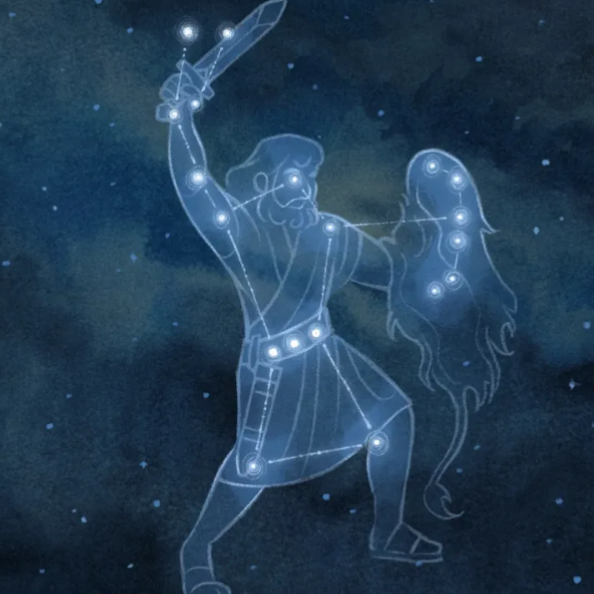
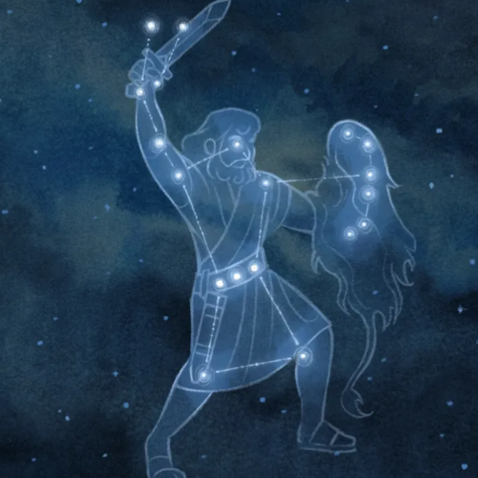

Constellations
Les constellations sont des regroupements d'étoiles dans le ciel nocturne. Elles ont été nommées d'après des figures mythologiques, des animaux ou des objets. Par exemple, la constellation de la Grande Ourse est l'une des plus reconnaissables dans le ciel.

Ajouts :
- Cartes du ciel :
Affichage des emplacements des principales constellations dans différentes saisons.
Repérez les principales étoiles, constellations et planètes et observez les mouvements du ciel! Cette carte est réglable à la date et à l'heure de votre choix.les étoiles sont regroupées en constelletions que vous pouvez apprendre à identifier.Commencer par la Grande Ourse qui est facile à reconnaitre et visible toute l'année. Repérez-la sur la carte et dans le vrai ciel. Progressez ensuite de constellatiion en constellation.
Au fil des jours et des mois, la course de la Terre autour du soleil nous fait voir une portion de ciel différente.C'est deuxième mouvement de défilement qui se combine avec le premier. Les étoiles reviennent ainsi chaque soir au même endroit du ciel avec un peu d'avance. Constatez-le en utilisant le bouton jour suivant ou en poussant le curseur d'animation à son avant-dernier cran. - Légendes et histoires : Mythologie associée à chaque
constellation pour un contexte culturel.
Tout qu long de l'histoire, les étoiles ont joué un rôle important dans de nombreuses cultures.Elles ont été utilisées pour naviguer.À l'époque de l'Ancien Testament, le Seigneur les utilisait pour symboliser le pouvoir de ses promesses.
Parfois les gens voyaient des formes dans les étoiles et interviennt des histoires pour les expliquer. Arriveras-tu à associer l'histoire de chaque constellation avec son image qui se trouve ci-dessous?😎️ - Conseils pratiques : Astuces pour observer et repérer les
constellations dans le ciel nocturne.
L'astronomie est à la portée de tous : il suffit d'aller dehors une nuit où le ciel est dégagé.Grâce à ces conseils, vous saurez mieux comment observer la voute cèleste et pourrez commencer à explorer vous-même l'Univers.- Éloignez-vous de la lumières de la ville : La pollution lumineuse dans les villes, causée par les lampadaires, les immeubles et les autos, rend impossible l'observation des étoiles de faible luminosité et des planètes.
- Choisissez un endroit dégagé où l'on peut voir le plus bas possible à l'horizon : Assurez-vous que la vue du ciel n'est pas bloqué par de grands bâtiments et des arbres.le sommet des montagnes est un excellent endroid pour observer le ciel nocturne.
-Cependant, un télescope vous permettra de voir de plus près des corps célestes lointaines, comme des planètes, des galaxies et des nébuleuses. On peut faire plusieurs belles observations à l'oeil nu dans le ciel nocturne, comme les constellations et la voie lactée.

 
